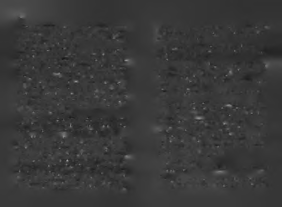

Ders-6: Kazaların %98'i ya uçak kalkarken olur ya da
ama hakkmızdaki haber sayısı bir eşiği geçtiğinde siz isteme
inerken!
seniz de -ki çoğunlukla istemezsiniz!- medya hakkınızda sürekli haber yapmaya başlar. Şöhretiniz sizden bağımsız bir Uçmak birkaç aşamadan oluşur. Kalkışa hazırlık, kalkış,
şekilde büyümeye başlar. Çabasız bir şekilde ününüz çoğalır,
havada hedefe doğru yol alma, inişe hazırlık ve iniş. Bunlar
çünkü kritik eşiği geçince her şey kendini büyütmeye başlar.
dan hangisi zor ve tehlikelidir? İstatistiklere göre kazaların
Başarı da, şöhret de, servet de başlangıçta zordur ama bir eşiği
%98'i ya uçak kalkarken ya da inerken olur!
geçtikten sonra -bu durum yükselen roketin yerçekiminin etkisin
Kariyer kazaları da ya ilk yükselişe geçilen dönemde ya
den çıkmasına benzer- az çabayla çok büyüme kolaylaşır. Dilerim
da inişe geçilen dönemde olur. Bazıları doğru başlayamadığı
bir gün, başarınızın kendi kendini büyütmeye başladığı, o
için başarısız olur, bazıları doğru bitiremediği için. Başarının
eşiği geçersiniz. Bu eşiği geçince başarınız başarı doğuracak,
en kritik anları, başlama ve bitirme zamanlarıdır. İnsan kalgeçemediğiniz sürece başarı için dokuz doğurmaya devam kışa da inişe de, yükselişe de düşüşe de, uçuşun her haline
etmek zorunda kalacaksınız!
zihnen hazırlamalıdır kendini.
K a r i y e r li bir hayat uçak yolculuğ u na,
Ders-7: Uçak havadayken, otomatik pilotla
k a r iy e r s iz h ayat k a ra yolculuğuna b e n ze r!
kullanılabilir hale gelir.
Uçaklar kalkış ve inişlerde pilotlar tarafından kullanılır
Sadece uçaklardan değil, uçak yolculuklarından da çıkarıama sonra havada ilerlerken bazen otomatik pilota bağlı labilecek başarı dersleri vardır. Hayat, bulunduğumuz yer ile
halde kullanılabilir. Kariyer işlerinde de durum biraz böy-
gitmek istediğimiz yer arasında geçen bir yolculuksa, kariledir. Bir alanda hızla büyümeye başladığınızda siz de göreceksi
yerli insanlar uçak yolcularına benzerler. Kariyersizler ise,
niz ki, büyüklükte bir eşiği geçtiğinizde, başarınız sizin fazla ça
otobüsle, atla ya da yaya gidenler gibidir.
balamanıza gerek kalmadan kendi kendini büyütmeye başlayacak.
Eğer bir uçak yolcusu olmak istiyorsanız, anons dilini iyi
Mesela iş hayatına sıfırdan girdiğinizde, ilk bin dolarınızı
anlamanız gerekir. Aklını başarıya takmış bir insan olarak
uçuş sürecinde duyduğum hemen her anonsu, kariyer dünkazanmak için köle gibi çalışmanız gerekir. Yüzüncü bin yasına tercüme ederim. Ben birkaçını yazayım, geri kalanını
dolarınız için o kadar çaba gerekmez. Hatta eğer bir gün
siz keşfedin.
bankadaki paranız bir milyon doları geçerse, bin dolar için
hiç çalışmanız gerekmez!
Anons 1: "Bu sizin için son çağrıdır!"
Servet gibi şöhret için de bir kritik eşik vardır. Medyada
Bu anons bana yaşlanınca kendine hesap vermeyi hatırlailk haberlerinizin çıkması için çok çaba harcamanız gerekir tıyor!
